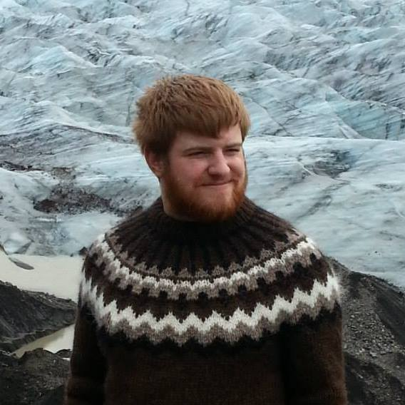

About me

My name is Malte Bjarki Mohrmann and I graduated with a degree in computer science from the University
of Reykjavík in 2013 with emphasis on gaming.
I have lived in Iceland my whole life but come from a German family and am now
looking to move to Berlin.
I have trained Karate since I was 6 years old and have been teaching for the past 9.
I am also quite interested in other martial arts and enjoy watching UFC with my friends.
I am an active gamer and always like trying out new games. My main drive at the moment is to find a job in the gaming industry in Berlin.
My other hobbies include photography, boardgames, swimming and reading.
Experience
Since graduating I have been working as a software developer at
TM Software in Reykjavík Iceland. There I worked on one of the most sold Atlassian JIRA plugins in the world,
Tempo.
At Tempo I worked on two different projects, the first Tempo project, Tempo Timesheets and the newest addition
to the suite Tempo Books which i have been a part of
since the beginning and is scheduled to be released at the end of the year.
While there I worked actively on every aspect of the development, be it design or font/back end coding.
Contact
If you would like to contact me you can do so through email or linkedIn.
I can also be found on facebook.
References
| Kristín Hreinsdóttir | Scrum master at TM Software - Tempo | Letter |
| Sólveig Krista Einarsdóttir | Former CEO of Þórshamar karate club | Tel: +354 8933336 |